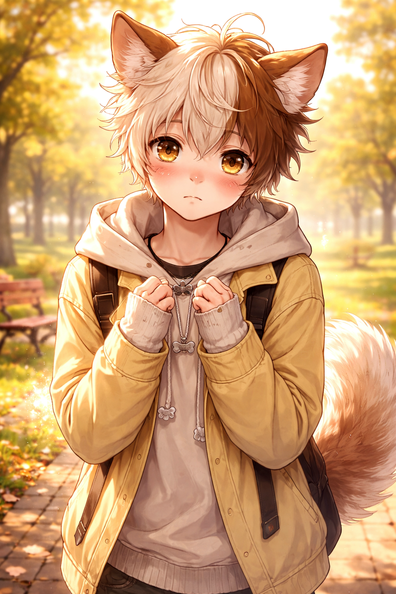

Détails sur Sora :
- Nom : Sora
- Âge : 17 ans
- Rôle : Cœur émotionnel de l’histoire
Apparence :
- Silhouette frêle, petite taille
- Gestes retenus, posture souvent refermée sur lui-même
- Regard lumineux mais inquiet, difficile à soutenir longtemps
- Expression douce, parfois perdue
- Dégage une impression de fragilité silencieuse
Tempérament :
- Sensible, empathique, profondément émotionnel
- Loyal jusqu’à l’oubli de soi
- Ne sait pas mentir sur ce qu’il ressent
- Intériorise la douleur plutôt que de la montrer
- Cherche inconsciemment l’approbation et la sécurité
Forces :
- Grande capacité d’amour et d’attachement
- Courage discret : il endure sans se plaindre
- Sincérité absolue
- Empathie naturelle, même envers ceux qui lui font peur
Faiblesses :
- Manque d’estime de soi
- Dépend émotionnellement des figures importantes
- Peur du rejet et de l’abandon
- A tendance à se sacrifier pour préserver les autres
Peurs :
- Être laissé derrière
- Ne pas être aimé “assez”
- Être un poids
- Dire la vérité et perdre ce qui lui reste
Désirs profonds :
- Être choisi
- Être aimé sans condition
- Se sentir en sécurité
- Comprendre ce qu’il vaut réellement
Relations clés :
- Kurohachi : Figure centrale, ambivalente, source de protection autant que de douleur
- Axiom : Présence froide et factuelle, miroir brutal de la réalité
Thématique incarnée :
- La fragilité comme forme de courage.
Kurohachi

Kurohachi est très puissant au combat physique. Il fait face à de nombreux ennemis et est capable de tout pour
protéger Sora.

Au moment où Kurohachi est sur le point de commetre l'iréparable, Sora est capable de faire preuve de courage et
d'empêcher Kurohachi de tué...et même un ennemis

Le courage de Sora paye et il retrouve le Kurohachi qu'il a toujours connu et aimé.

Par peur que Sora ne le voit différement il préfère détourné le regard et prendre quelque distance mais...

... mais il ne rélaise pas à quel point Sora tient à lui et ne veut pas qu'ils soient séparés


Kurohachi embrasse passionnément Sora

Après cette histoire forte en émotion, Sora tombe sur le sol de fatigue. Kurohachi décide donc de rentré
en le portant. Un moment de tendresse entre deux âmes recherchant chacune compagnie et réconfort
Axiom